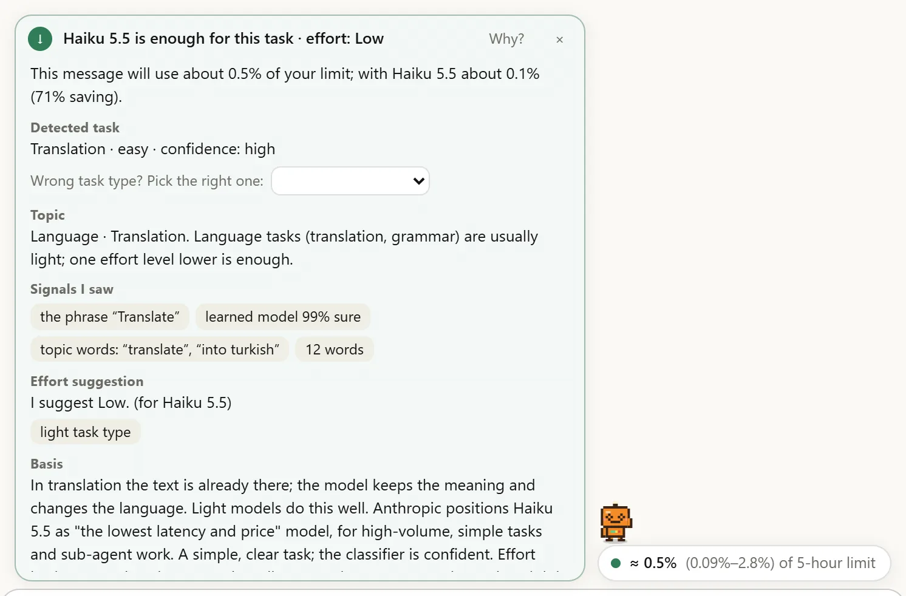
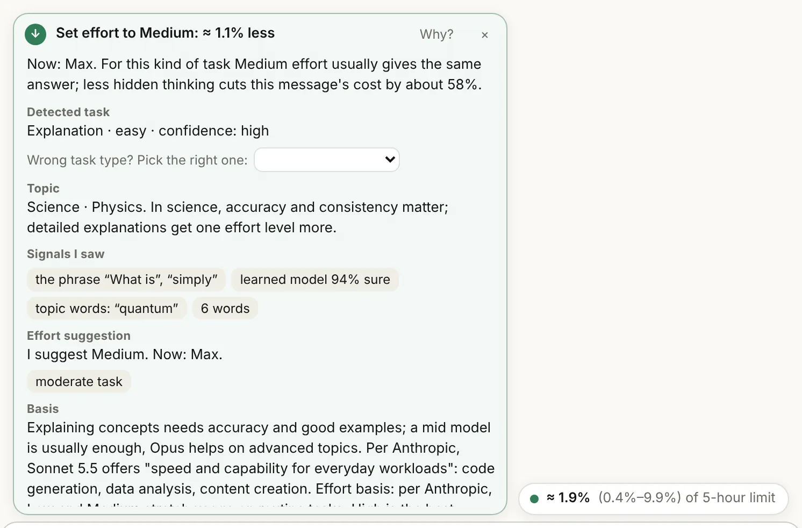
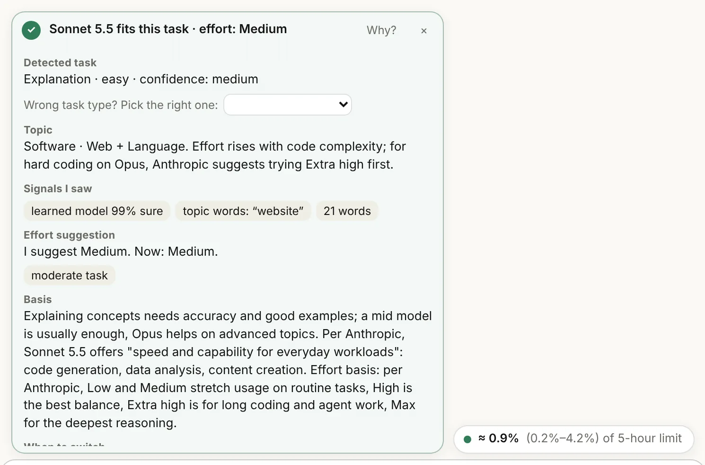
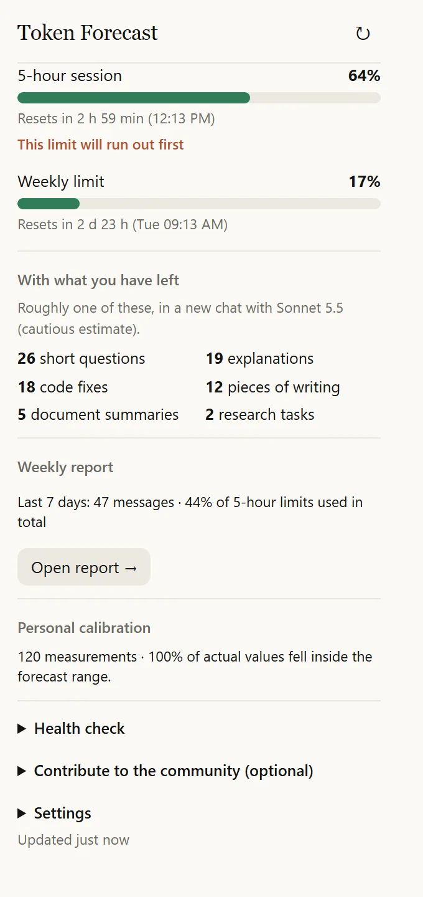
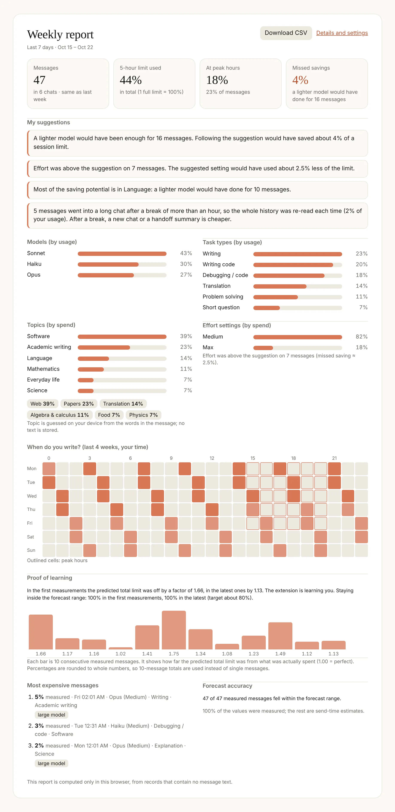

Haiku 5.5
0,25×frente a Sonnet
La menor latencia y el menor precio. Traducción, corrección, resúmenes cortos, preguntas de respuesta única.
Se sugiere solo para tareas claramente simples de las que está seguro.
Extensión de navegador gratuita para tu límite de uso de Claude
Token Forecast te dice qué parte de tu límite de Claude de 5 horas y semanal consumirá un mensaje antes de que pulses enviar. También muestra qué modelo y qué nivel de esfuerzo bastan, con sus razones, y aprende tu plan con el tiempo.
LO QUE FALTA
En claude.ai tienes que abrir Ajustes → Uso, y solo te dice lo que ya has gastado. El límite suele agotarse en mitad de una tarea, con un mensaje inesperado. Token Forecast lleva esto al chat y va un paso más allá: antes de enviar.
| Función | Ajustes → Uso | Contadores de uso* | Token Forecast |
|---|---|---|---|
| Porcentaje de 5 horas y semanal, hora de restablecimiento | ✓ | ✓ | ✓ |
| Dentro del chat, junto al cuadro de mensaje | – | ✓ | ✓ |
| Cuánto costará este mensaje, antes de enviarlo | – | – | ✓ |
| Qué modelo basta, y por qué | – | – | ✓ |
| El coste oculto de cambiar de modelo a mitad de chat | – | – | ✓ |
| Aproximadamente cuántas tareas permite tu límite restante | – | – | ✓ |
| Aprende de tu plan y de tus hábitos | – | – | ✓ |
| Explicación «¿Por qué este mensaje costó tanto?» | – | – | ✓ |
| Informe semanal, mapa de calor por horas y consejos personales | – | en parte | ✓ |
| Cuentas atrás de la caché y de las horas punta | – | en parte | ✓ |
* Ninguna de las ocho extensiones de uso cuyas páginas revisamos en octubre de 2026 ofrece una estimación por mensaje antes de enviar ni una sugerencia de modelo razonada; todas muestran el uso después de enviar. Una tiene cuenta atrás de la caché, otra de las horas punta y otra un mapa de calor.
QUÉ HACE
Todo funciona en tu navegador. Lo añadido en esta versión está marcado.
Mientras escribes, muestra cuánto de tu límite de 5 horas y semanal se irá, con un rango del 80 %. Tiene en cuenta adjuntos, historial del chat, modelo y esfuerzo de razonamiento.
Te dice qué modelo basta, en qué se fijó y cuánto ahorrarías. Si no está seguro, nunca sugiere un modelo ligero.
Cuánto del coste viene de la respuesta, del razonamiento, del historial y de los adjuntos, de un vistazo en la tarjeta.
Cuántos minutos más se lee gratis el historial del chat y cuándo terminan las horas punta.
Según tu última hora, te dice si el límite de 5 horas se llenará antes de restablecerse.
Cuando un chat se alarga demasiado, un clic copia un prompt listo para pedirle a Claude un resumen corto que llevar a un chat nuevo.
Si un mensaje gasta mucho más de lo estimado, te explica por qué: historial releído tras una pausa larga, horas punta, una respuesta larga o uso en otro dispositivo.
Mensajes, límite gastado, proporción en horas punta, mezcla de modelos y tareas, mapa de calor por horas y consejos hechos para ti. Notificación el lunes por la mañana, exportación a CSV.
Reconoce el tipo de tarea con reglas y un pequeño modelo aprendido. Cuando lo corriges, lo aprende en tu dispositivo.
Tras cada mensaje mide cómo cambió realmente tu límite y aprende el tamaño de tu plan y la longitud de las respuestas que Claude te da.
Clasifica un mensaje en 16 áreas temáticas y subtemas (Ciencias · Física, Ingeniería · Eléctrica…) con unas 2600 palabras clave. En preguntas de salud, derecho y dinero nunca sugiere un modelo ligero.
De Bajo a Máximo: qué nivel de esfuerzo basta para esta tarea y cuánto límite ahorras si tu ajuste actual es mayor. Conoce el valor por defecto de cada modelo y el nivel Muy alto.
«Necesito que me hagan una web con sistema de traducción» es un encargo de construcción, no una traducción. La extensión distingue la diferencia y no sugiere Haiku.
Arrastra la píldora adonde quieras. Se aparta sola cuando se abre el menú de esfuerzo o de modelo de claude.ai, y Alt + flechas también la mueven.
El informe muestra, con tus propias mediciones, si el error de previsión disminuye con el tiempo. Si no, también lo dice.
EN LA EXTENSIÓN
Una pequeña píldora y una sugerencia razonada sobre el cuadro de mensaje; en la barra de herramientas, tus límites, lo que permite tu límite restante y el estado del aprendizaje.
▶ Full walkthrough video (YouTube, 4 min)





CÓMO FUNCIONA
Anthropic no publica el tamaño exacto de los límites. Por eso la extensión parte de una estimación aproximada y se corrige con cada mensaje midiendo cómo cambia tu porcentaje de uso real antes y después.
SUGERENCIA DE MODELO
Sugerir un modelo ligero es un error peor que sugerir uno caro: una mala respuesta obliga a preguntar de nuevo. La extensión sugiere Haiku solo para tareas claramente simples de las que está segura; ante la duda, dice al menos Sonnet. Su base es la guía de elección de modelo de Anthropic, un conjunto de prueba de 60 prompts (100 % de acierto, ninguna sugerencia demasiado ligera) y el modelo aprendido en el dispositivo.
La menor latencia y el menor precio. Traducción, corrección, resúmenes cortos, preguntas de respuesta única.
Se sugiere solo para tareas claramente simples de las que está seguro.
Velocidad y capacidad para el trabajo diario: código, análisis de datos, redacción, explicaciones.
La sugerencia por defecto para la mayoría de tareas; el lado seguro ante la duda.
Programación compleja y tareas empresariales: grandes refactorizaciones, diseño de sistemas, ejecuciones largas de agentes.
Cuando las pistas de dificultad (demuestra, arquitectura, exhaustivo…) son altas.
La mayor capacidad: sesiones de agentes de varias horas, investigación profunda en varios pasos.
Solo para derivaciones, diseños e investigaciones muy difíciles.
Coste relativo: se supone proporcional al precio de la API y se corrige con la calibración. En claude.ai el prompt del sistema y la memoria llevan el contexto por encima de 100K tokens, así que se aplica el precio de contexto largo de Haiku. Cambiar de modelo en un chat largo significa que el modelo nuevo relee todo el historial; en ese caso la extensión dice «elígelo en tu próximo chat nuevo».
TEMA Y ESFUERZO
Un segundo eje junto al tipo de tarea: clasifica un mensaje en 16 áreas temáticas y subtemas (en tu dispositivo, por palabras clave). En preguntas de salud, derecho y dinero nunca sugiere un modelo ligero y mantiene el esfuerzo en Medio o más. En ciencias, matemáticas e ingeniería sube el esfuerzo un nivel para las explicaciones. En poesía y ficción limita el esfuerzo a Medio, porque pensar mucho aporta poco ahí.
quantum · cell · reaction · galaxy · experiment
derivative · proof · matrix · probability · integral
circuit · Arduino · voltage · statics · PID
bug · API · React · Python · server
dataset · LLM · classifier · regression
paper · thesis · citation · reviewer · abstract
roadmap · milestone · sprint · task list
poem · story · novel · character · dialogue
customer · marketing · interview · résumé · pitch
investing · loan · tax · inflation · budget
contract · lease · lawsuit · consumer rights · GDPR
medication · symptoms · exercise · nutrition · sleep
exam · homework · studying · teacher · quiz
translation · grammar · vocabulary · English · pronunciation
history · philosophy · sociology · psychology · war
recipe · trip · home · hobby · shopping
Las palabras clave son ejemplos abreviados de cada área. Si no encuentra ningún área, dice «General» y la sugerencia no cambia.
Base: la documentación y el artículo de soporte de Anthropic sobre el esfuerzo. Las proporciones del coste de razonamiento (relativas a la longitud de la respuesta visible) son una suposición de la extensión y se corrigen con tus propias mediciones. No se ha medido si el esfuerzo sugerido conserva la calidad de la respuesta.
APRENDIZAJE AUTOMÁTICO
Saber qué tipo de tarea es un mensaje sustenta tanto la estimación como la sugerencia de modelo. La versión anterior lo reconocía solo con reglas. Ahora las puntuaciones de las reglas alimentan un pequeño modelo aprendido que se ejecuta en tu dispositivo. El modelo pesa 128 KB, nunca se conecta a internet y se ejecuta en menos que una pulsación de tecla.
Tipo de tarea reconocido correctamente: reglas → reglas + modelo. En 120 mensajes cotidianos escritos sin mirar (sin tildes, con saludos y erratas).
Errores peligrosos: tomar una tarea difícil (código, mates, investigación) por una simple. Dos conjuntos de prueba, 240 mensajes.
Sugerencias de Haiku correctas en tareas realmente simples. Sugerencias erróneas de Haiku 0 → 1 («17 % de 2350»).
Nota honesta: los mensajes de entrenamiento y prueba también los escribió el proyecto; la precisión con mensajes reales de usuarios aún no se ha medido. Para eso sirven precisamente las contribuciones de la comunidad. La calidad de las respuestas (¿bastaba de verdad Haiku?) no se ha medido.
PRUEBA
200 usuarios simulados con valores reales ocultos (120 mensajes cada uno), que ejecutan el código real de previsión y calibración de la extensión. Cada mensaje se prevé primero, luego se ve la verdad y se aprende. Una copia que no aprende y un pronosticador perfecto que conoce los valores reales funcionan sobre el mismo flujo de mensajes.
Error del total del bloque: primeros 3 mensajes → últimos 40 mensajes. La copia que no aprende se queda en torno a 2,1–2,2×.
El rango de previsión del 80 % cubre la verdad alrededor del 79 % de las veces (objetivo 80 %). Los rangos no son ni demasiado estrechos ni demasiado amplios.
Error de un solo mensaje: que aprende / suelo del pronosticador perfecto. El error restante es la aleatoriedad de la longitud de la respuesta; aprender no puede corregirla.
NATURALEZA
Cada respuesta de Claude se genera en centros de datos que consumen electricidad y agua para refrigeración. Elegir el modelo más potente y el esfuerzo más alto para una tarea sencilla supone más cómputo del necesario. En nuestras pruebas, seguir las sugerencias redujo el cómputo en ≈ 40 %.
Menos cómputo al seguir las sugerencias, en 240 mensajes de ejemplo (entre el 38 % y el 50 %).
Energía ahorrada por semana si 1 millón de personas enviaran 100 mensajes cada una. La electricidad semanal de cientos de hogares.
Agua ahorrada por semana en el mismo escenario. 100 toneladas son el agua potable de 50.000 personas durante un día.
Son estimaciones. Supusimos una respuesta de ≈ 400 tokens por mensaje, 0,6–3 mWh de energía por token (0,24–1,2 Wh por mensaje) y 3,6–5,3 L de agua por kWh (≈ 0,9–6 mL por mensaje; refrigeración del centro de datos más generación de electricidad). Fuentes: Epoch AI 2025, Jegham et al. 2025, Li et al. 2023, medición de Gemini de Google (agosto de 2025: prompt mediano 0,24 Wh). Los mensajes largos con razonamiento consumen más. Anthropic no publica estas cifras para Claude. Para una persona: ≈ 10–50 Wh por semana, suficiente para encender una bombilla LED de 9 W durante 1–5 horas.
COMUNIDAD
Anthropic no publica el tamaño de los límites; cada usuario aprende su plan midiendo. Si se combinan esas mediciones, un recién llegado obtiene estimaciones precisas desde su primer mensaje. No se envía nada automáticamente.
PRIVACIDAD
La extensión no tiene servidor. Tus mensajes, adjuntos y chats nunca salen de tu dispositivo; sin analítica, sin seguimiento. Solo funciona en claude.ai, con tu propia sesión.
claude.ai.INSTALACIÓN
Se instala con un clic desde la Chrome Web Store; Edge y Brave usan la misma página, y Opera con el complemento «Install Chrome Extensions». Si prefieres instalarla a mano, los pasos están abajo.
manifest.json directamente dentro.chrome://extensions (Opera: opera://extensions) y activa el modo de desarrollador.Antes de quitar la versión antigua, abre la ventana de la extensión: Ajustes → Exportar mis datos. Tras instalar la nueva, usa Importar mis datos.
La comprobación del sistema de la ventana muestra el estado de cada paso. Usa Copiar registro al informar de un error; el registro no contiene texto de mensajes.
LIMITACIONES
PREGUNTAS FRECUENTES
claude.ai tiene dos límites: uno de sesión de 5 horas y otro semanal. Anthropic no publica su tamaño exacto; Ajustes → Uso muestra cuánto has gastado y cuándo se restablece. Token Forecast muestra ese mismo porcentaje dentro del chat y estima, antes de enviar, cuánto gastará un mensaje.
Sí. Cuenta en tu navegador los tokens de tu mensaje, los adjuntos y el historial del chat; en la demo de arriba los ves en la fila «ENTRADA → RESPUESTA». El tokenizador de Claude no es público, así que la cifra es una estimación ajustada a cada idioma. Su verdadera función es decirte qué parte de tu límite suponen esos tokens.
No. Tampoco necesitas una cuenta.
Lee el cuadro de mensaje en tu navegador para contar tokens, pero no envía nada a ningún sitio. La extensión no tiene servidor, ni analítica, ni seguimiento. El informe semanal y los valores aprendidos no contienen texto de mensajes.
Los rangos son amplios en los primeros mensajes porque el tamaño de los límites empieza como una suposición aproximada. Se estrecha midiendo cada mensaje; en simulación el error baja a 1,13× tras 20 mensajes y a 1,08× tras 100. La ventana muestra cuántas mediciones cayeron dentro del rango.
Ajustes → Uso muestra lo que ya has gastado. Token Forecast te dice, antes de enviar, cuánto gastará este mensaje, qué modelo basta y por qué algo costó tanto.
No es una herramienta oficial de Anthropic. Lee, con tu sesión, los datos de uso que usan las propias páginas de claude.ai; nunca envía mensajes, cambia ajustes ni automatiza nada.
Chrome, Opera, Edge y Brave (Chromium 116 o posterior). Una versión para Firefox está en la hoja de ruta.
Sí. El código es abierto bajo la licencia GNU AGPL-3.0: puedes leerlo, ejecutarlo, modificarlo y compartirlo. Si distribuyes una versión modificada, debes publicarla con la misma licencia y su código fuente, y conservar el aviso de copyright. El nombre y el logotipo «Token Tahmini / Token Forecast» no están cubiertos por la licencia; las versiones modificadas deben usar otro nombre.
Mira la tarea, no la palabra. «Traduce esto: …» es una petición de traducción y Haiku basta. «Necesito que me hagan una web con sistema de traducción» es un encargo de construcción y se sugiere al menos Sonnet. En las pruebas automáticas hay 15 frases trampa como esa y peticiones de traducción reales.
Ventana de la extensión → Informe semanal → Prueba de aprendizaje. Tras 30 mediciones compara el error de las primeras y de las últimas, y lo dice si no bajó. El experimento con usuarios simulados está en la sección Prueba de arriba.
La extensión y este sitio están en turco, inglés, alemán, francés, español, italiano, portugués, ruso, japonés y chino; el idioma se elige en los ajustes. El análisis de mensajes (tipo de tarea, tema, sugerencias de modelo y esfuerzo) solo se hace con mensajes en turco e inglés. Si escribes en otro idioma, la previsión de tokens y de límite sigue funcionando, no se muestra ninguna sugerencia y la extensión te lo dice. El vídeo de presentación y las capturas están en turco e inglés; los demás idiomas ven las inglesas.
HOJA DE RUTA
Token Forecast seguirá siendo gratuito. Si quieres ayudar a que siga adelante: